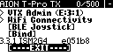
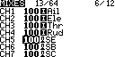
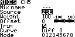
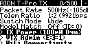
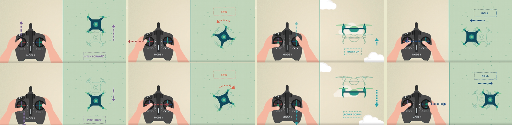

遥控器基本知识
2025-01-07
遥控器主要用于穿越机控制和模拟器飞行，本章节将会介绍以下内容：
图中3.3.1为ELRS固件版本，第一个“3”即为大版本号。
以现在流行的CRSF 协议为例：
共有16个通道，其中4个通道分别控制横滚（A，也称Roll）、俯仰（E，也称Pitch）、油门（T，Throttle）、偏航（R，也称Yaw），1个独占的通道控制解锁。这意味着还有11个可以自由使用的通道。使用这些通道可以控制飞行模式、LED开关、舵机角度等。
只有将开关映射到通道后，遥控器才能控制穿越机的行为。
操作步骤：
修改发射功率操作方式：
遥控器的固件
遥控器固件有很多种，推荐使用edgeTX固件搭配ELRS协议的开源遥控器。在连接接收机之前，应确保固件的大版本号与接收机大版本号相同，否则无法连接。图中3.3.1为ELRS固件版本，第一个“3”即为大版本号。

什么是通道
通过通道可以控制穿越机做出相应的动作或者改变状态，比如两个摇杆通过占用一共4个通道控制飞机整体的运动方式，开关可以通过占用一个通道控制电机的旋转与停止，也可以通过占用一个通道控制飞行模式等。以现在流行的CRSF 协议为例：
共有16个通道，其中4个通道分别控制横滚（A，也称Roll）、俯仰（E，也称Pitch）、油门（T，Throttle）、偏航（R，也称Yaw），1个独占的通道控制解锁。这意味着还有11个可以自由使用的通道。使用这些通道可以控制飞行模式、LED开关、舵机角度等。
只有将开关映射到通道后，遥控器才能控制穿越机的行为。
将开关映射到通道
每个开关按钮的功能都是可以自定义的，意味着哪个顺手就可以用哪个。一般情况下一个开关可以映射到多个通道，但不能多个开关映射到一个通道。（可使用高级函数功能做到多个开关控制一个通道，但不推荐使用）操作步骤：
- 进入模型设置菜单，找到MIXES页
- 选择一个空通道，进入设置界面，选择Source一项
- 按下想要映射到此通道的开关，将会自动设置成对应的开关
- 确认保存


对频
使遥控器和接收机配对连接的操作叫做对频（bind）。 操作步骤：- 进入系统菜单，进入ExpressLRS页
- 飞机快速插拔电池三次，使接收机进入对频模式，此时接收机指示灯应两次快闪
- 选择Bind
- 接收机灯常亮，表示对频成功 一个遥控器可以同时连接到多个接收机，因此连接过这个遥控器的接收机在和其他遥控器对频前，仅应该有一个处于上电状态。


连接模拟器
有USB和蓝牙两种方式。USB方式
- 插入USB数据线
- 选择USB Joystick
- 在模拟器软件中选择USB手柄输入

蓝牙方式
- 进入ELRS系统菜单
- 选择BLE Joystick
- 在运行模拟器软件的设备中打开蓝牙，选择Express Joystick配对
- 在模拟器软件中选择蓝牙手柄输入 应保持遥控器的蓝牙功能提示界面开启，否则蓝牙功能被关闭。

设置发射功率
即遥控器发射的遥控信号功率。修改发射功率操作方式：
- 进入ELRS系统菜单
- 选择TX Power一项
- 设置功率后保存即可

穿越机的操作习惯
按照操作方式和操作者的习惯，主要分为以下三种：- 美国手 左手控制油门和偏航，右手控制俯仰和横滚。
- 日本手 左手控制俯仰和偏航，右手控制油门和横滚。
- 中国手 左手控制俯仰和横滚，右手控制油门和偏航，与美国手相反。

